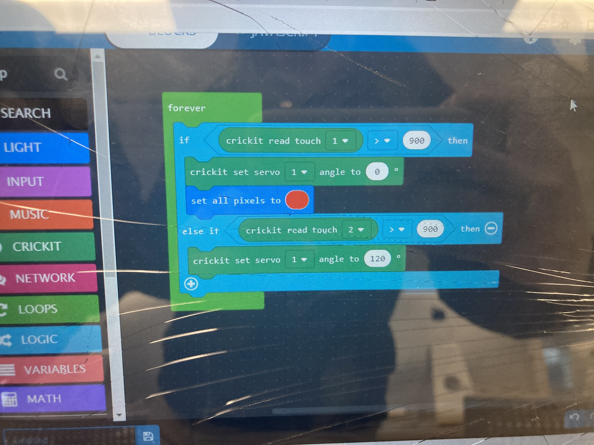

Anxiety is an intense, excessive, and persistent worry and fear about everyday situations. It causes a fast heart rate, rapid breathing, sweating, and tiredness.
This model shows how social media has a huge impact on peoples lives and causes people to have extreme anxiety. This loopy model was created when we were first putting our ideas down on paper, but we changed our project idea to how presenting causes anxiety.

This video shows how anxiety can be triggered and how a person with anxiety may react when called to present. In the following video the girl is called up to present but she gets a bad feeling, which is represented by the clouds bouncing up and down. She starts to walk to the front of the class, but when she gets there she panics which is represented by the flashing light and then she gets scared and walks back to her desk. She keeps going back and forth between her desk and the front of the class because she thought she built up the nerve to present but it turns out she didnt.